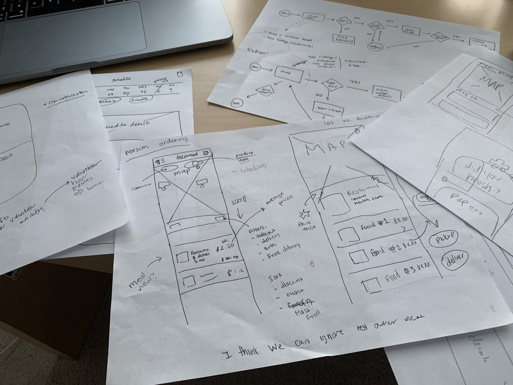
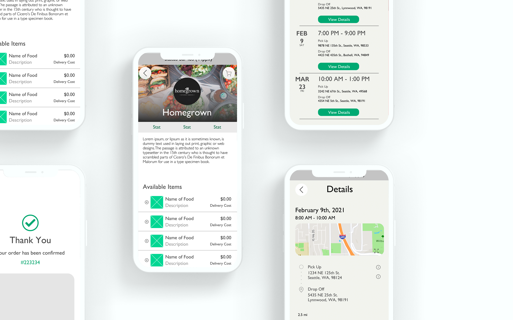

Food Roots
An innovative problem to food waste

Let's talk about food waste!
Duration: 2 Weeks Tools: Figma, Photoshop Team: Parima Sahbai, Katie Silverstein, Jin Hong Jung
The Problem
Each year, 50 million people in the United States go hungry and as the economic downturn due to the pandemic wreaks havoc amongst families, this number is set to increase.
We also have a huge food waste problem. Nearly 1/3rd of fresh produce goes to waste every year. We waste approximately 30-40% of our food supply. That's $161 Billion pounds of food a year!
Which brings us to the problem at hand. How can we bridge all this food with the people who need them the most through technology?
Research
We first approached the Denver Food Rescue a non-profit, which aims to rescue food waste from grocery stores and other wholesale producers to understand their mission, and get a basic understanding of how a similar organization works. We did 3+ user interviews with different teams to understand how they currently use technology to run their organization.
While learning about the organization, something we immediately noticed was the potential for growth and scalability beyond Colorado, and even Denver. What our users needed was a better scheduling application, but could we help develop something that helped them branch out while giving them those features too?
Expanding our Scope
After brainstorming, we came up with a brilliant idea: What about an app, a discount doordash if you may, where gig workers get paid for delivery, and meals are free. You can choose to pickup your food for completely free, or get your food delivered at a discounted price. We interviewed 4 more people, two gig worker, two restaurants owners to supplement our change.
User Personas
Esther
Esther cares deeply about the environment, especially in regards to food waste. She’s been finding opportunities to help the community by delivering food to those in need. She currently uses the Food Rescue Robot as her method of scheduling and finding directions from distributors to recipient sites, but finds it inconvenient because no mobile platform exists nor does it have a good infrastructure for her to schedule her rides.
View detailsLiza
Liza is a single mom of two who is working 2 part time jobs. She is working full time away from her children, but recently lost her house due to the economic downturn and is currently living with relatives. Liza doesn’t have much time to cook or go grocery shopping as she struggles with an extremely busy schedule.
View detailsPlanning
Planning is an essential part of groupwork which is why we spent a big chunk of our time planning, sketching, and discussing strategies to better work together. These blueprints, created from countless iterations, were essential to staying on the same page with my teammates.

Wireframes
Starting off with making the symbols/components as a group made our work infinitely easier as it gave shape to what we wanted our app to be. It set the "mood" of what we were going for in terms of UI and put the 3 of us on the same page. After completing the components, it was a matter of putting the puzzle pieces together and iterating on the flow.
Mid-Fidelity Wireframes
Final Prototype
After receiving critique on our Mid-Fidelity wireframes, we set out to really make it feel like our own. This included anything from talking about which turkey sandwich to put in the mockups, to what our final accent color should be. After iterating for hours on zoom and experiencing our first serious case of pixel paralysis, we set out to do some user tests which gave us a lot of insight into what needed to be changed.
User Testing Changes
And the final result was the following mockup in Figma